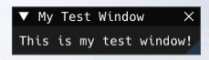
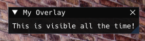
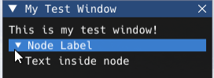
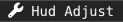

ImGui
Basics
Dear ImGui is a bloat-free graphical user interface library for C++.
It outputs optimized vertex buffers that you can render anytime in your 3D-pipeline-enabled application.
It is fast, portable, renderer agnostic, and self-contained (no external dependencies).
This guide explains how to use Anomaly’s ImGui implementation (currently available only with Modded Exes), which can be used in Lua scripts.
By default pressing F11 will show the ImGui overlay (a menu bar at the top of the screen).
The keybind can be changed in the settings.
When the ImGui overlay is shown, the mouse cursor will change and the game will no longer react to any input.
Pressing Esc or F11 will hide it again - you can also transfer the input back to the game without closing the overlay by double clicking anywhere outside of existing ImGui windows.
In this case, pressing F11 will bring the input back to the ImGui overlay.
Some resources to get you started on ImGui:
- Interactive ImGui Demo
- ImGui Debug Tools (accessible in-game from the
Aboutmenu)
Differences between C++ and Lua ImGui implementations
Not every feature of ImGui has been ported (yet?), for example drawlists or custom images/textures are not supported at the moment.
I didn’t test every single function, it’s possible that there may be some oversights.
The main differences:
-
ImGui.instead ofImGui:: -
Some functions return multiple values, so the following C++ code
bool expanded = ImGui::Begin("My Test Window", &my_window_visible, 0)turns into
expanded, my_window_visible = ImGui.Begin("My Test Window", my_window_visible, 0) -
ImGui.Text()andImGui.TextUnformatted()do the same thing, usestring.format()to format strings -
The
InputTextfunctions have their return values swappedmultiline_text, changed = ImGui.InputTextMultiline("##Multiline", multiline_text, 500, vector2():set(500,500)) -- vs. other functions changed, test_value = ImGui.DragFloat("Test", test_value, 0.01, 0, 10) -
Scripted ImGui uses XRay types (
vector2, vector, vector4, fcolor)
Check lua_help_imgui.script for a full list of functions and enums.
ImGui Window
Let’s begin with a simple window
my_window_visible = true
function imgui_on_render(name)
if name == "Main" then
if my_window_visible then
expanded, my_window_visible = ImGui.Begin("My Test Window", my_window_visible, 0)
if expanded then
ImGui.Text("This is my test window!")
end
ImGui.End()
end
end
end
function on_game_start()
RegisterScriptCallback("imgui_on_render", imgui_on_render)
end

Pressing the triangle will contract the window - expanded will be false in the example above.
Closing the window will set my_window_visible to false.
When to call ImGui functions
The ImGui implementation adds a new script callback imgui_on_render.
It has a single argument i.e. function imgui_on_render(name) which tells you the name of the UI that is being rendered at the moment.
The engine currently sends callbacks for rendering Main, MenuBar and MenuFile but you can also call the callback yourself with a custom name to allow other scripts to append to your menus or windows.
Main
The main ImGui render, this is where you want to draw your windows.
MenuBar
You can also add your own menus to the menu bar at the top of the screen like this:
function imgui_on_render(name)
if name == "Main" then
[...]
elseif name == "MenuBar" then
if ImGui.BeginMenu("My Menu") then
clicked, my_window_visible = ImGui.MenuItem("My Cool Window", nil, my_window_visible, true)
SendScriptCallback("imgui_on_render", "MyMenu")
ImGui.EndMenu()
end
end
end

MenuFile
The File menu is the very first menu that shows up on the menu bar.
You can also append your menu items to this menu.
function imgui_on_render(name)
[...]
elseif name == "MenuFile" then
_, my_window_visible = ImGui.MenuItem("My Cool Window", nil, my_window_visible, true)
end
end

Any time, actually
In reality, you can draw ImGui UI whenever you want.
If you wanted to make a debug overlay that’s visible at all times, even without opening the ImGui overlay, just render your window inside a new function and use AddUniqueCall to have it run once per frame.
function window_overlay()
expanded, _ = ImGui.Begin("My Overlay", true)
if expanded then
ImGui.Text("This is visible all the time!")
end
ImGui.End()
end
AddUniqueCall(window_overlay)

Other UI elements
Some more examples.
Buttons
if ImGui.Button("Do Something", vector2():set(80,22)) then do_something() end

Draggables
local test_value = 1
local test_vec = vector():set(0,0,0)
[...]
changed, test_value = ImGui.DragFloat("Test", test_value, 0.01, 0, 10)
if changed then [...] end
changed, test_vec = ImGui.DragFloat3("TestVec", test_vec, 1, -100, 100)
if changed then [...] end

Color Picker
local my_color = fcolor():set(0.75,0,0.25,1)
[...]
changed, my_color = ImGui.ColorPicker4("Light Color", my_color)
if changed then test_light.color = my_color end

Text Input
local multiline_text = "input text here, пожалуйста"
[...]
multiline_text, changed = ImGui.InputTextMultiline("##Multiline", multiline_text, 500, vector2():set(250,200))
if changed then
printf("newtext: %s", multiline_text)
end

Tree Nodes
if ImGui.TreeNode("Node Label") then
ImGui.Text("Text inside node")
ImGui.TreePop()
end

Combo Box
local selectables = {
[1] = "test1",
[2] = "test2",
[3] = "test3",
}
local selected = 1
[...]
if ImGui.BeginCombo("Test Combo", selectables[selected]) then
for i = 1, #selectables do
if (ImGui.Selectable(selectables[i], i == selected, 0, vector2():set(100, 15))) then
printf("Selected %s", selectables[i])
selected = i
end
end
ImGui.EndCombo()
end

Fonts
You can add custom fonts by putting .ttf or .otf files into gamedata\textures\fonts
Optionally, font configurations can be changed by adding a .ltx file with the same name into the fonts folder
Example font configuration to change the font size (fonts use sizepixels = 16 by default)
[font]
sizepixels = 19
If you want to adjust the built-in font, create a font config with the name $default.ltx
Or you could even replace the built-in font with a new one by adding a $default.ttf or $default.otf into the fonts folder.
Using different fonts
To use the font in your ImGui window, you’ll have to tell ImGui which font to use
ImGui.PushFont("Blackcraft")
ImGui.TextColored(fcolor():set(1,0,0.25,1), "Gobocore")
ImGui.PopFont()

Make sure to use PopFont once you’re done, this will make ImGui return to the default font
Icons
The default font also supports icons to enhance the look of your UIs
ImGui.BeginMenu(ImGui_Icon.WRENCH.." Hud Adjust")

Check imgui_helper.script for a full list of icons!
Styles and colors
Tweak ImGui styles and colors to your liking
ImGui.PushStyleColor(ImGuiCol.WindowBg, fcolor():set(0.04, 0.00, 0.05, 0.82))
ImGui.PushStyleColor(ImGuiCol.FrameBg, fcolor():set(0.48, 0.16, 0.43, 0.54))
ImGui.PushStyleColor(ImGuiCol.PopupBg, fcolor():set(0.61, 0.12, 0.41, 0.60))
ImGui.PushStyleVar(ImGuiStyleVar.WindowBorderSize, 0)
ImGui.PushStyleVar(ImGuiStyleVar.WindowPadding, vector2():set(20,20))
[draw your UI]
ImGui.PopStyleColor(3)
ImGui.PopStyleVar(2)